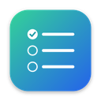

Welcome to TaskPop
A small to-do list that slides in from the corner of your screen when you need it, and gets out of the way when you don’t.
This takes about a minute. You’ll choose how to open TaskPop and see how the list works.
Tasks
Send the proposal★
Meeting with Adam at 3pm
Call the bank
Reply to Sara
Add a task…
Open it from any app
Tap a key twice, quickly. Pick the key you’d like to use:
- Or press this shortcut
- Or click TaskPop in the menu bar
Let it open by itself
TaskPop can show your list when you come back to your Mac, so you see what’s left before you start.
TaskPop starts with Windows. You can change that in Windows Settings › Apps › Startup.
Tasks
Send the proposal★
Call the bank
Add a task…
Using your list
- ReturnType a task and press Return to add it
- Click the circle to tick a task off
- !Start a task with ! to star it. Starred tasks stay at the top.
- ⋯Click ⋯ on a task for a timer, reminders, daily repeat and Google Calendar
- WorkClick a category at the top to see just its tasks. What you add there goes into it.
- Drag a task to move it up or down
- Drag the top of the panel to put it anywhere on your screen
- EscPress Esc, or double-tap again, to put it away
Tasks
Send the proposal★
Meeting with AdamToday 3:00 PM⋯
Call the bank
Reply to Sara
Buy milk
You’re all set
You can take this tour again from Settings.